The system uses innovative technologies to greatly reduce "inspection costs," which has been a major issue in conventional AOI technologies.
Moreover, while harnessing quality improvement systems, it facilitates efficient "defect prevention" to contribute to the reduction of "the end customer failure costs."
Building Automation
Industrial Automation
Power Automation & Safety


Bangladesh Distributor
VT-S500-02
Inline PCB inspection system
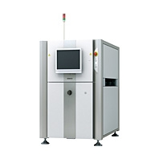
Best Quality at the Minimum Q Cost!
about this Product Family
Related Contents
- Power Supplies / In Addition
- Inspection System
- Features
- Lineup
- Specifications
- Dimensions
- Catalog
last update: January 26, 2015
New concept in AOI for "optimization of customer’s quality cost".
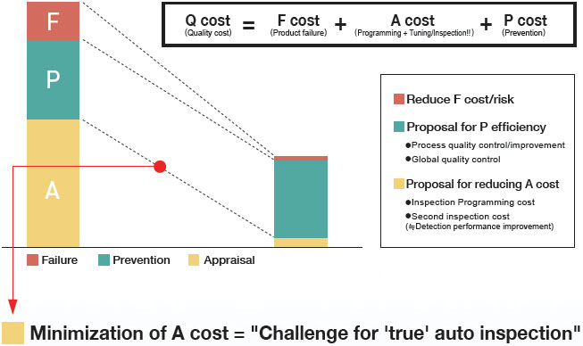
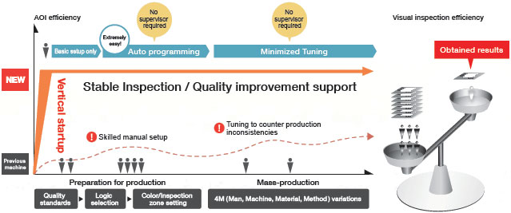
VT-S500 for realizing vertical startup and stable inspection
[Vertical startup of inspection] [High-speed/stable inspection]
Equipped with Color Highlight™ 3D (Core Technology)
Automatic extraction of "fillet features"
"The VT-S500 uses new image processing technology to automatically extract fillet features, which are quantified in numerical values and used for inspection."
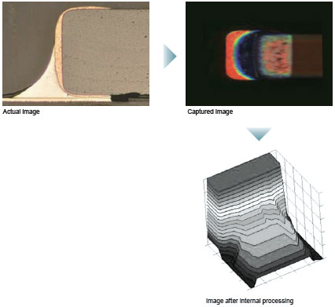
Direct input of quality standards.
High-speed startup with automatic programming. (Patent Pending)
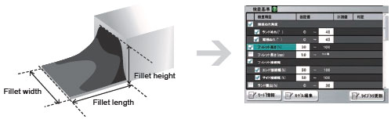
Automatic inspection programming is possible simply by setting inspection criteria for fillet features (length, height and width).
[High-speed/stable inspection]
Inspection time improves of 60%* compared with conventional models
Higher-speed inspection has become possible to respond to a significant increase in productivity.
* Compared with the evaluation result of VT-RNS2 series. (Omron's PCB)
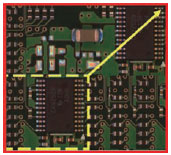
Available in dual lane
Dual lanes for reduced cycle time. Position of lanes can be selected according to the customer's production facility.
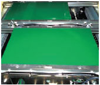
Minimize the effect of secondary reflection and shadow
Parameters have been optimally set to pick up gradations unperceived by Human Eye and automatically separate good from bad components.
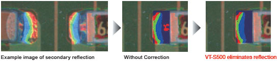
Auto parameter calculation to counteract the variation of components
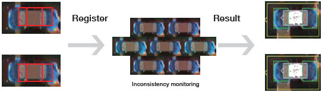
In order to cope with component inconsistencies, parameters can be automatically calculated - simply by registering required components.
PCB position adjustment algorithm
Automatically detects to offset position of land position according to PCB variation and warpage.
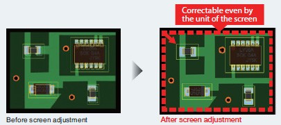
Inspection accuracy has been improved and it has become possible to inspect at the correct position using the new position adjustment method based on the entire screen instead of the conventional land-based adjustment.
System solution
[Quality improvement support]
Different security levels can be assigned to the inspection system and its peripheral devices. The peripheral devices are connectable via an open network for location-free networking.
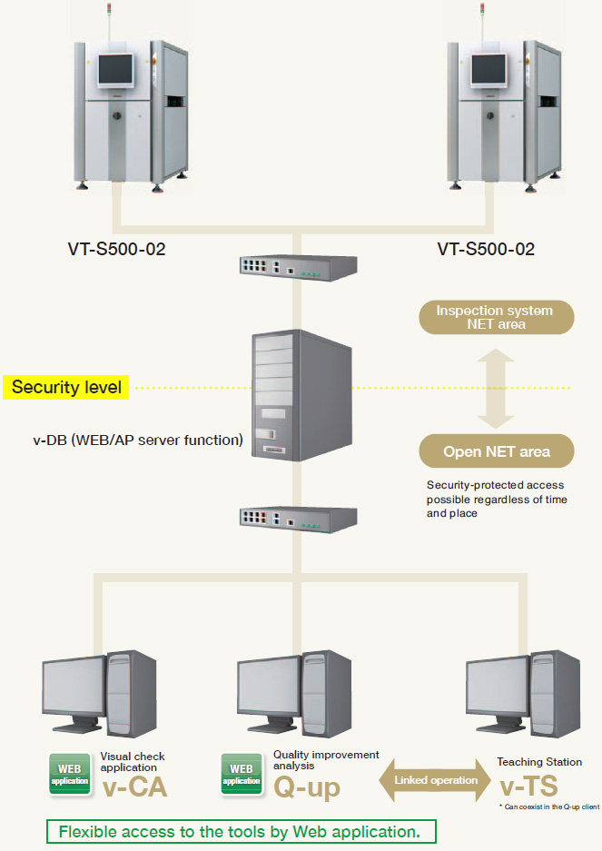
WEB application
v-CA
Visual check application
Inline Check
Inspection result can be obtained using production conditions such as PCB-ID and lot number as key words, facilitating visual check of defective locations.
Inspection result can be obtained using such as PCB-ID and lot number, facilitating visual check of defective locations.
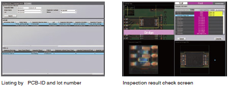
WEB application
Q-up Navi
Monitoring of production status and quantification of defect causes/tendencies enable the acceleration of process improvement and process control cost reduction, while enhancing quality improvement support.
last update: January 26, 2015